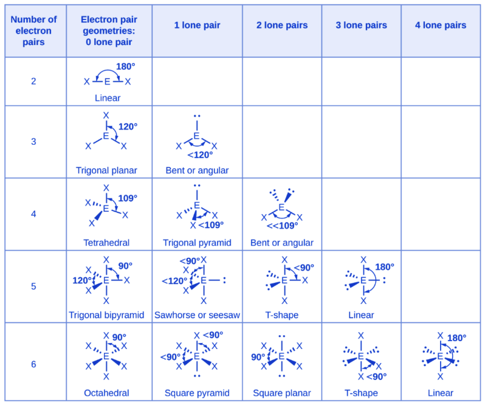

VSEPR Theory
It is finally time to take our knowledge and begin building molecules in three dimensional space. We will discuss VSEPR Theory here, as well as a simple introduction into Molecular Orbital (MO) Theory in the next lesson. So let’s start with the central idea behind VSEPR Theory: electron domains.
Simply, electron domains are any region of space where electrons are likely to be found. This may sound like an orbital, but the point of electron domains is that they encapsulate everything from single bonds, to double and triple bonds, as well as lone pairs, and even single unpaired electrons in rare scenarios.
In Valence Shell Electron Pair Repulsion (VSEPR) Theory, the idea is that these electron domains will repel each other as far as possible, and take the shape that minimizes the repulsion force of the electrons on each other.
Some arrangements are then obvious to visualize, like with only two electron domains. Clearly, the best way to arrange the electrons is to place them exactly 180° away from each other, minimizing the repulsion. This is called a linear shape; all diatomic molecules (molecules with only two atoms) are linear, as well as polyatomic molecules with two electron domains.
With three electron domains, the most favourable outcome pushes the electrons 120° away from each other, called a trigonal planar, because the atoms form a triangle in the two-dimensional plane.
You may think that the most favourable configuration for four electron domains would be some sort of cross shape, but that’s incorrect! Think in the third dimension, and realize that the electron domains can be placed even further away from each other in a tetrahedral shape, 109.5° away from each other.
Five electron domains requires a bit more complex thinking. It has three equilateral domains separated by 120°, and two axial domains separated by 180°. You can think of this as a linear shape being placed perpendicular to a trigonal planar shape. The axial domains are then 90° away from the equilateral domains. This shape is called a trigonal bipyramid.
Finally, six electron domains is simply an octahedral shape, where domains are placed on each axis 90° away from each other. Obviously, configurations for seven, eight, and more electron domains are possible, but they are far too complex and rare to be relevant at this level.
This would be a much simpler lesson if I stopped here, however, we must now discuss lone pairs. See, although lone pairs are classified as an electron domain, unlike bonding pairs, which are attracted to two nuclei and therefore have their electron density distributed between them, lone pairs are localized primarily around the central atom. This gives lone pairs a greater influence on the spatial arrangement of the other electron domains.
Furthermore, molecular geometry describes the arrangement of the atoms, so lone pairs are not included when naming the molecular geometry. Lone pairs not only compress angles, but also create a whole new list of possible molecular geometry combinations.
Consider a common example, like H₂O. The oxygen forms two covalent bonds with the hydrogen atoms, but that leaves two unshared lone pairs. Using VSEPR Theory, there are four electron domains, and so the molecule should take on a tetrahedral shape.
However, remember that lone pairs compress the bend more and are not drawn in the final molecule, giving H₂O a “bent” or “V-shaped” look, with the oxygen atoms being less than 109.5° away from each other due to the lone pairs having more repulsion (a close estimate is around 104.5°).
Below is a chart of VSEPR Theory configurations up to 6 electron domains, with lone pair counterparts. There are multiple websites if you want to learn more about VSEPR Theory, but we’ll stop here for now. Remember to practice lots!
